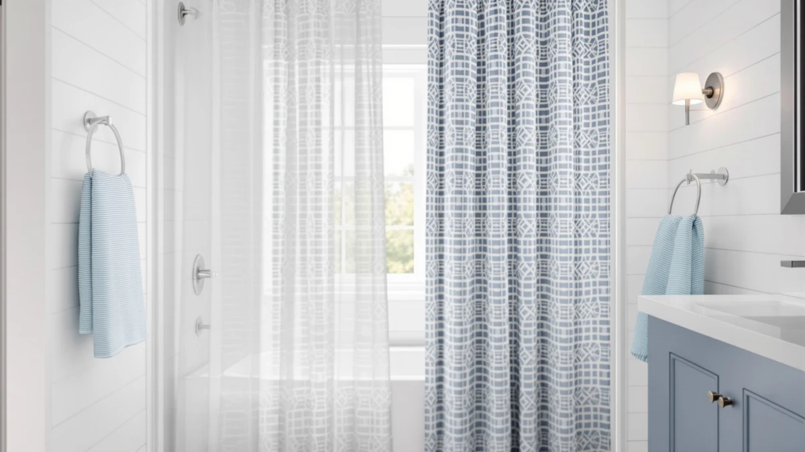

Things to Know Before You Buy
- Fabric curtains (polyester, cotton, waffle weave) feel softer and drape better, but most need a separate liner to stay fully waterproof.
- PEVA is a single wipe-clean plastic sheet that blocks water on its own, so you can skip the liner and save a step.
- Fabric goes in the washing machine and lasts three to five years; PEVA is cheaper up front but you replace it more often once it creases or clouds.
- The price gap is real: a good fabric curtain runs about $11 to $28, while a PEVA panel sits around $9 to $19.
The fabric vs PEVA shower curtain question comes down to a trade you make every morning: fabric gives you a softer, more hotel-like bathroom, while PEVA keeps water off your floor for a few dollars and almost no upkeep. Both hang from the same rings and cover the same tub, so the choice rarely turns on looks alone. You are picking between the feel of woven cloth and the wipe-clean convenience of a thin waterproof sheet.
You will find fabric sold as polyester, cotton, waffle weave, or hotel-grade, and PEVA sold as a chlorine-free plastic that skips the harsh vinyl smell. We compared how each one handles daily splashes, mildew, washing, and replacement cost so you can match the material to your bathroom instead of guessing at the store. The picks below cover where each one earns its spot.
Quick Answer
Fabric wins for looks, comfort, and longevity, so pick it if you want a curtain that reads like a finished room and survives dozens of washes. PEVA wins for price and zero-fuss waterproofing, which makes it the smarter buy for a rental, a kids' bathroom, or a backup liner. Many people end up with both: a fabric curtain out front and a thin PEVA liner behind it.
What is Fabric?
Fabric shower curtains are woven textiles, usually polyester, sometimes cotton, linen, or a waffle weave blend. The threads give the panel weight and a soft hand, so it hangs in even folds instead of clinging to your legs. Polyester versions, like the Biscaynebay hotel-quality curtain, are treated to shed water and resist mildew, while heavier waffle weaves like the EUTXL 256GSM add texture that looks closer to a bath towel than a plastic sheet.
The catch with fabric is waterproofing. Most fabric panels are water-resistant, not fully waterproof, so water can wick through the weave over a long shower. That is why hotels pair a fabric curtain with a thin liner on the tub side. You wash fabric in the machine on cold, hang it to dry, and it comes back looking new, which is where it pulls ahead on lifespan. Expect three to five years from a mid-range polyester curtain if you wash it monthly and keep it spread out to dry.
What is Peva Shower Curtain?
PEVA stands for polyethylene vinyl acetate, a chlorine-free plastic made as an alternative to PVC vinyl. It arrives as a single thin sheet that is waterproof on its own, so it doubles as both curtain and liner. Brands like LiBa sell PEVA panels that hang straight from the rings and keep water inside the tub without any extra layer, which is the main reason people reach for it.
PEVA's pitch is convenience and price. You wipe it down with a sponge instead of running a wash cycle, and it costs a few dollars less than most cloth curtains. PEVA also skips the sharp chemical odor that older PVC liners are known for, since it leaves out the chlorine. The downsides show up over time: the plastic can crease permanently, cloud from soap scum, and tear at the grommets. You get a lighter panel that water can push around, and when it wears out you toss it rather than wash it, so replacement comes sooner.
Head-to-Head: Build Quality & Durability
Build quality is where fabric and PEVA separate the most. A fabric curtain is stitched cloth with reinforced, often metal-grommeted holes at the top, so it holds its shape and takes years of tugging without failing. The EUTXL waffle weave at 256 GSM hangs with real weight, and a polyester panel like the Biscaynebay resists snags because the threads flex instead of splitting. Machine washing does not break these curtains down; it refreshes them.
PEVA is a molded plastic sheet, thinner and lighter by design. It waterproofs well out of the box, but the same thinness that makes it cheap also makes it fragile. Reinforced grommets help, yet the plastic around them can still tear when a ring catches. Fold lines from the packaging sometimes never fully relax, and heat or steam can warp the panel over months. For durability, fabric is the material you keep and PEVA is the one you plan to replace. If you want a curtain that survives a move and a few careless yanks, cloth is the sturdier build.
Head-to-Head: Price & Value
Price is PEVA's strongest argument. A PEVA liner or curtain usually runs $9 to $19, and the LiBa panels sit right in that band. Fabric asks for more up front, from about $11 for a basic polyester curtain to $28 for the heavyweight EUTXL waffle weave. On the shelf, PEVA looks like the obvious saver.
The math shifts once you count replacements. A fabric curtain that lasts three to five years costs you pennies per month after the first purchase, while a PEVA sheet you swap every six to twelve months adds up. Run the numbers over three years and fabric often ends up cheaper per year, even though it stings more at checkout. PEVA still wins if you want the lowest possible sticker price today.
Head-to-Head: Use Experience
Day to day, the two materials feel different the moment you touch them. A fabric curtain has weight and drape, so it stays put in a draft and does not billow inward when the shower runs. It also dampens sound and reads as a finished piece of the room, which matters if guests see your bathroom. The trade is drying time: cloth holds moisture, so you spread it out afterward or it can start to smell.
PEVA flips those strengths. The light plastic can cling to you when the air moves, the classic cold-sheet-on-the-arm moment, and it does nothing to muffle noise. It dries in seconds, though, and a quick wipe clears soap scum without a laundry cycle. Mildew is a wash here: fabric resists it better when washed regularly, while PEVA repels water but grows mold in the folds if you leave it bunched. You get lower upkeep with PEVA and a nicer daily feel with fabric.
When to Choose Fabric
Choose fabric when the look and feel of your bathroom matter as much as the function. If you want a curtain that hangs like drapery, softens the room, and holds up to years of washing, cloth is the pick. It suits a primary bathroom, a guest bath you want to impress in, or any space where you would rather launder a curtain than keep buying new ones. Fabric is also the greener option, since one panel replaces many disposable liners. Pair it with a thin liner on the tub side and you get a handsome front and reliable waterproofing behind it. Go fabric if you plan to keep the same curtain for several years.
When to Choose Peva Shower Curtain
Choose PEVA when cost and low effort come first. It is the right call for a rental, a kids' bathroom, a gym or basement shower, or as the waterproof liner behind a fabric curtain. If you would rather wipe a panel clean than run a wash cycle, PEVA saves you the trouble, and its chlorine-free build avoids the harsh smell of old vinyl liners. PEVA also makes sense when you like to swap colors or patterns often, since replacing a cheap sheet costs little. Pick it when you want water off the floor for under $20 and do not care about drape or long-term feel. Plan to replace it once it creases or clouds, and keep it spread out to slow mildew in the folds.
Our Top Picks
If you land on fabric after weighing the trade-offs, these three curtains are the ones we would put on the rod. Each covers a different budget and texture, from a plush waffle weave to a hotel-grade polyester that costs about the same as a PEVA liner.

Editor’s Pick
EUTXL 256GSM Heavyweight Waffle Weave
The heavyweight 256 GSM waffle weave gives you the most towel-like texture and drape of the group, and at $27.99 it hangs and washes like a curtain you keep for years.
$27.99
Check Price on Amazon
Best Value
BigFoot Shower Curtain – 72
At $15.99 the BigFoot lands near PEVA prices while giving you real fabric weight, a fair middle ground if you want cloth without the premium sticker.
$15.99
Check Price on Amazon
Premium Choice
Biscaynebay Hotel Quality Fabric Shower
The hotel-grade polyester weave costs about the same as a PEVA liner at $10.99, sheds water well, and brings a clean, finished look that fits almost any bathroom.
$10.99
Check Price on AmazonFrequently Asked Questions
Is a PEVA or fabric shower curtain better?
Neither one is better across the board. Fabric wins for looks, comfort, and longevity, so it suits a primary or guest bathroom you want to keep for years. PEVA wins for price and low-effort waterproofing, which makes it the smart pick for a rental, a kids' bathroom, or a liner behind a fabric curtain. The right answer depends on whether you value feel or budget more.
Do you need a liner with a fabric shower curtain?
Usually yes. Most fabric curtains are water-resistant rather than fully waterproof, so water can wick through the weave over a long shower. Pair the fabric panel with a thin PEVA or plastic liner on the tub side to keep water off the floor. A few polyester curtains are treated to repel water and can go solo in a low-splash setup.
Is PEVA safe and non-toxic?
PEVA is a chlorine-free plastic made as an alternative to PVC vinyl, so it skips the chemicals behind the strong off-gassing smell of a fresh vinyl curtain. If you want the low price and water resistance of plastic but care about indoor air, PEVA is the better plastic choice. Airing a new panel out for a day before hanging cuts any residual smell.
Which lasts longer, fabric or PEVA?
Fabric lasts longer. A mid-range polyester curtain runs three to five years because you can machine wash it and rehang it looking new. PEVA is a thin sheet that creases, clouds, and tears at the grommets over time, so most people replace it every six to twelve months. If lifespan is your priority, fabric is the clear winner.
Can you wash a PEVA shower curtain?
You can, but wiping is the easier route. A sponge with a little dish soap or a vinegar spray clears soap scum and the film along the bottom hem in a minute. Some PEVA panels tolerate a gentle cold machine wash with towels, though high heat warps the plastic, so skip the dryer and hang it back up to air dry.
Final Verdict
Neither material is the outright winner here. The right pick depends on how you live. Choose fabric, like the EUTXL 256GSM waffle weave, when you want a curtain that looks finished, feels soft, and survives years of washing. Choose PEVA when you want waterproofing on the cheap with almost no upkeep, or run both with a PEVA liner behind a fabric front to get the best of each.